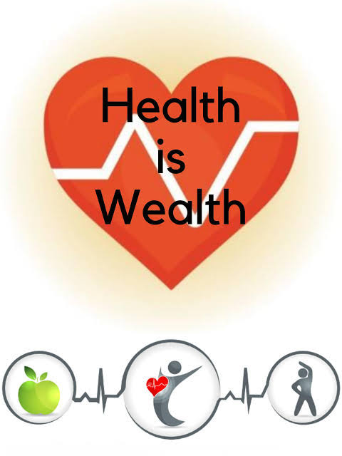
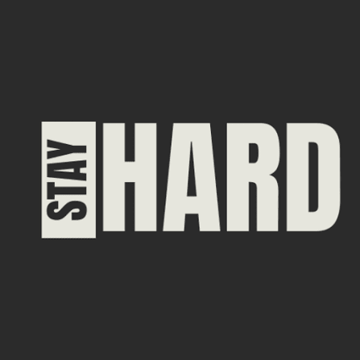

"Helath is welath" this is a very popular quote. It is very important to focus on our health. Nowadays some of the people are very serious about their health and some of the people are very careless and some are just thinking to start something. Everyone should undrstand the importance of the health.
Carelessness
Nowadays many people are so careless about their health they eat junk food on dialy basis don't do any physical activity and so on. Some of the people eat junk food even after suffering health issues due to that. There is no restriction about junk food that we should not eat that but it is not good to eat that on daily basis. Some of the people are very addicted to the caffine,alchohol and smoking that is the worst thing. There are already many ways available to get rid of this addiction.

→ Importance
Health is not about going gym and maintain the perfect physique. We should eating right things getting important nutritions,vitamins and protien. We should focus on our mobility some people have their work mostly on computer so they have to spent their many hours on the table. We should do exercise or practice yoga or any phsysical activity in which we move our body. Going to gym will be best but if we are not getting enough time then we should do something at home when we get time no one is that much busy every day. There are many fitness influencer encourging everyone to focus on their helath and it is not wrong everyone should focus on health because we are the only who will suffer if any health issue occurs. Exercising daily is also good for mental health and focusing on new learnings.
Use of AI
We can use AI for creating our exercise routine or yoga routine according to our body. AI is very usefull in these things. We can also use AI to create a diet plan according to our body that what should we eat or what we should not eat. Ask to AI right now
Conclusion :-
